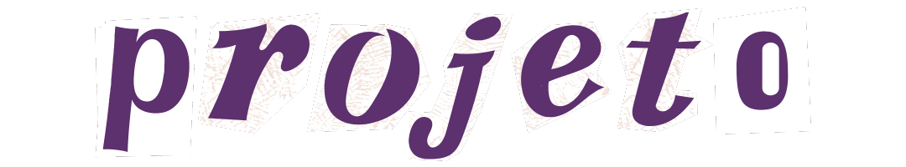
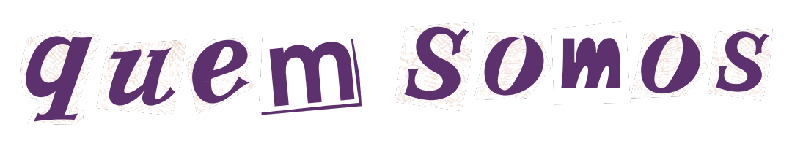

Este relato de experiência apresenta as ações do Projeto de Ensino “Speak Out Safe”, desenvolvido entre
fevereiro e setembro de 2024.
O projeto tem como objetivo criar uma plataforma web para denúncias anônimas de abusos, protegendo a
identidade das vítimas e proporcionando um ambiente
seguro para compartilhamento de experiências e apoio mútuo. Além disso, o projeto inclui a recomendação
de obras literárias em parceria com o Clube Fridas e Lidas,
promovendo a reflexão sobre questões de gênero. O curso de Informática contribui para o desenvolvimento
técnico e o suporte com as vítimas.

Nicole
Estudante do IFC - Campus Camboriú do ensino médio
integrado com técnico em informática
Rayssa
Estudante do IFC - Campus Camboriú do ensino médio
integrado com técnico em informática